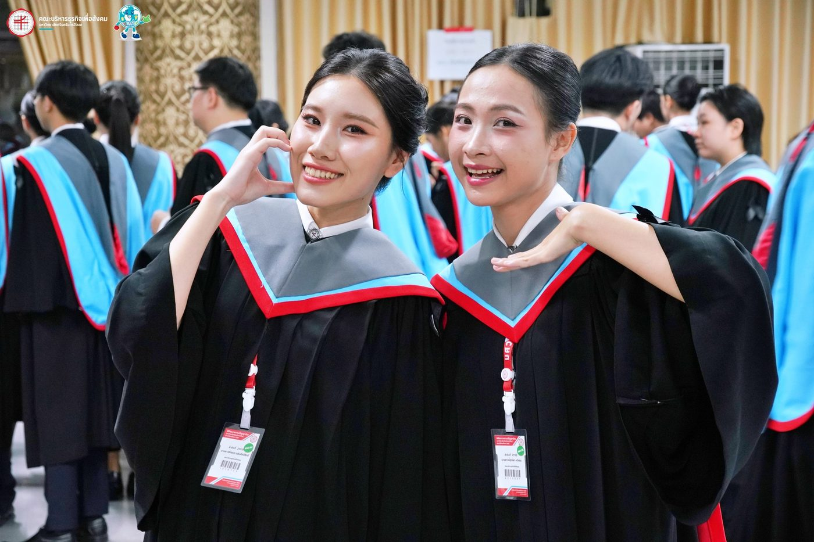
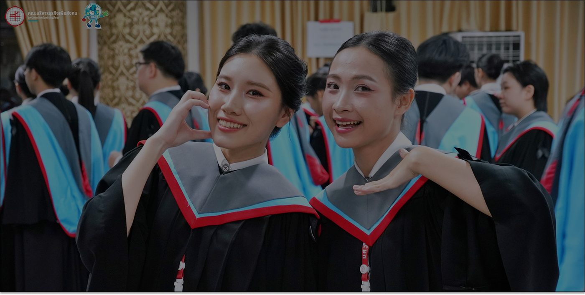

Vision · วิสัยทัศน์
คณะบริหารธุรกิจเพื่อสังคม คือองค์กรแห่งการเรียนรู้ชั้นนำด้านการบริหารธุรกิจ เพื่อความยั่งยืนของสังคม
A leading learning organisation in sustainable business management for society.

About BAS SWU
เกี่ยวกับคณะ
เราคือใคร เราเชื่อในอะไร และเราเติบโตมาอย่างไร
Vision & Mission
วิสัยทัศน์และพันธกิจ
Vision · วิสัยทัศน์
คณะบริหารธุรกิจเพื่อสังคม คือองค์กรแห่งการเรียนรู้ชั้นนำด้านการบริหารธุรกิจ เพื่อความยั่งยืนของสังคม
A leading learning organisation in sustainable business management for society.
Mission · พันธกิจ
BAS ขับเคลื่อนแนวปฏิบัติทางธุรกิจเชิงนวัตกรรม เพื่อสร้างผลกระทบเชิงบวกต่อสังคม
BAS drives innovative business practices to create positive social impact.
Core Values
ค่านิยมและสมรรถนะหลัก
ค่านิยมของคณะสะกดเป็นคำว่า BAS ตรงกับชื่อคณะ — สามตัวอักษรนี้คือสิ่งที่คณะคาดหวังจากบุคลากรและบัณฑิตทุกคน
บริหารธุรกิจ
ผู้มีความสามารถในการใช้และถ่ายทอดองค์ความรู้และความเชี่ยวชาญด้านบริหารธุรกิจให้กับผู้อื่น
มุ่งความเป็นเลิศ
ผู้เน้นการลงมือปฏิบัติ มุ่งมั่นสู่ความเป็นเลิศและผลสัมฤทธิ์ในสิ่งที่ทำ
เพื่อสังคม
ผู้ร่วมแบ่งปันและอุทิศทักษะความสามารถคืนสู่สังคม ชุมชน และประเทศชาติ
Core Competency · สมรรถนะหลัก
“สร้างการเปลี่ยนแปลงทางธุรกิจสู่การปฏิบัติ เพื่อสังคมที่ยั่งยืน”
Our Story
ประวัติคณะ
คณะบริหารธุรกิจเพื่อสังคม มศว ก่อตั้งขึ้นเป็นคณะอิสระ แยกออกมาจากคณะสังคมศาสตร์ มหาวิทยาลัยศรีนครินทรวิโรฒ

01 · Founding
ก่อตั้งเป็นคณะอิสระของมหาวิทยาลัยศรีนครินทรวิโรฒ แยกออกมาจากคณะสังคมศาสตร์
02 · Growth
หลักสูตรด้านการบัญชีและการเงิน การตลาดและการจัดการ และบริหารธุรกิจเริ่มเป็นรูปเป็นร่าง พร้อมเปิดหลักสูตรระดับบัณฑิตศึกษา
03 · Going Global
เปิดหลักสูตรการจัดการธุรกิจโลกที่สอนเป็นภาษาอังกฤษทั้งหมด พร้อมพันธมิตรแลกเปลี่ยนที่เยอรมนีและฟิลิปปินส์
04 · Today
นิสิต 3,776 คน อาจารย์ 38 คน 9 หลักสูตร และบทบาทที่เติบโตขึ้นในการศึกษาธุรกิจเพื่อสังคม